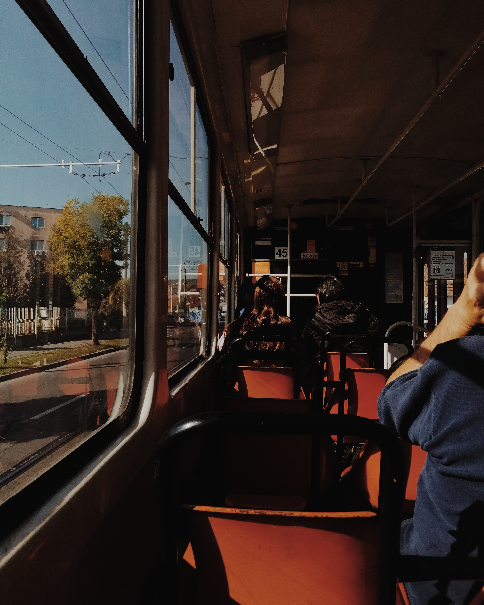

About
"To do things right, first you need love, then technique." - Antoni Gaudi'
Over the years I practiced divers hobbies and if you wanna see more pictures of my work, you can select on menu the portfolio you would like to see.

Traditional Drawing
I can remembered that I was always passioned by drawing. Since I was little I couldn't stop myself doing that so. I am mostly self thought but I also have 1 and a half year of practice with a proper art teacher.

Photography
I can't say that I am very good at taking photos. It's more like a day by day thing. If I see something beautiful I just stop for a moment and take the picture. But if photography it's not about spontaneity, than what?

Digital Drawing
I also tried digital drawing when I was very young, like 12 or 13, but just some moths ago I started doing more in that direction, and right now I am trying to learn photoshop and illustrator.